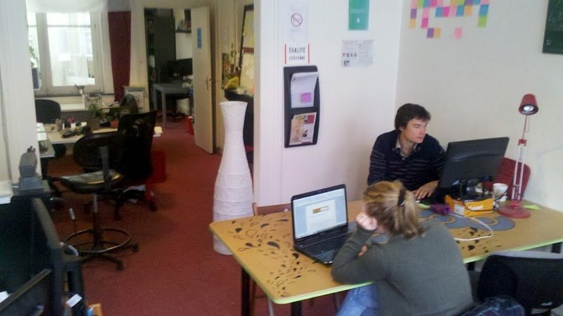
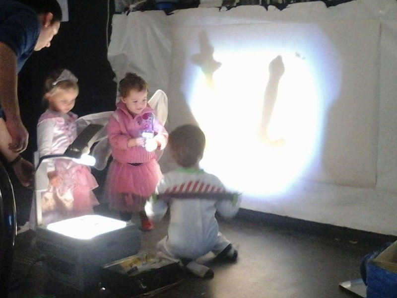

Du squat ...
... au loft d'architecte
~20 résidents / ~30 passagers / ~10 satellites
Cantine / Courses / Ménage / etc.
Maraîcher / Ciné-Docu / Ping-Pong / ...
... / Kids party / Théâtre / etc.
Ouvert à toute forme de contribution
Coopérative / Maraîcher / BIO
Contenu pubilé sous CC BY-SA